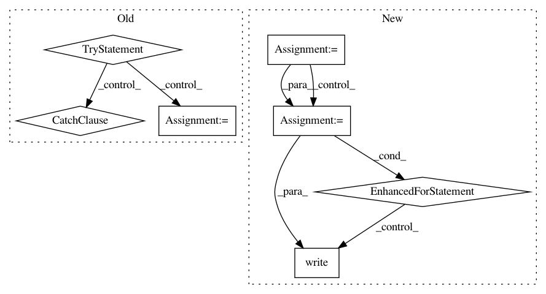

981e4266d4ea816b08a762193bd52f40cd1a3242,examples/mnist/keras/mnist_inference.py,,inference,#Any#Any#Any#,26
Before Change
output_file = tf.gfile.GFile("{}/part-{:05d}".format(args.output, worker_num), mode="w")
while True:
try:
// get images and labels from tf.data.Dataset
img, lbl = sess.run(["inf_image:0", "inf_image:1"])
// inference by feeding these images and labels into the input tensors
// you can view the exported model signatures via:
// saved_model_cli show --dir <export_dir> --all
// note that we feed directly into the graph tensors (bypassing the exported signatures)
// these tensors will be shown in the "name" field of the signature definitions
outputs = sess.run(["dense_2/Softmax:0"], feed_dict={"Placeholder:0": img})
for p in outputs[0]:
output_file.write("{}\n".format(np.argmax(p)))
except tf.errors.OutOfRangeError:
break
output_file.close()
if __name__ == "__main__":
After Change
tf.io.gfile.makedirs(args.output)
output_file = tf.io.gfile.GFile("{}/part-{:05d}".format(args.output, worker_num), mode="w")
for batch in ds:
predictions = predict(conv2d_input=batch[0])
labels = np.reshape(batch[1], -1).astype(np.int)
preds = np.argmax(predictions["dense_1"], axis=1)
for x in zip(labels, preds):
output_file.write("{} {}\n".format(x[0], x[1]))
output_file.close()
if __name__ == "__main__":
In pattern: SUPERPATTERN
Frequency: 3
Non-data size: 7
Instances
Project Name: yahoo/TensorFlowOnSpark
Commit Name: 981e4266d4ea816b08a762193bd52f40cd1a3242
Time: 2019-08-07
Author: leewyang@verizonmedia.com
File Name: examples/mnist/keras/mnist_inference.py
Class Name:
Method Name: inference
Project Name: tensorflow/datasets
Commit Name: a3e9a51bb758111edf59f7b6dbcc5205d0f0364b
Time: 2018-12-06
Author: pierrot@google.com
File Name: tensorflow_datasets/core/download/downloader.py
Class Name: _Downloader
Method Name: _sync_download
Project Name: luispedro/mahotas
Commit Name: 64624fb2b46a228fef1141e1ded84e52acccaf6e
Time: 2015-06-09
Author: luis@luispedro.org
File Name: bin/mahotas-features.py
Class Name:
Method Name: main